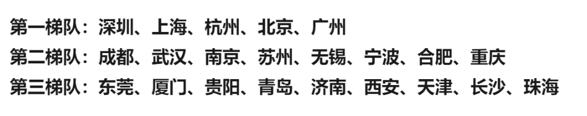

经济这么烂，房子能买吗？【重要】
原创 V姐万事屋 V姐来了 2022-04-14 20:00
原文链接(长) 原文链接(短)
Hi, 我是V姐。
昨天跟统一老师连麦直播了5小时，是不是封控区最卷的隔离人我不知道，连麦方没有美颜这件事，我觉得视频号可以改进一下。
本次三天直播干货满满，所以特意给没有时间看的朋友总结了文字要点：
【周三直播的文字要点】-V姐楼市部分
1、楼市调控的手段很多，其中最有力的是 **放开限购** 和 **降低首付**。前者释放有钱人购买力，后者释放普通人购买力。放开限购会极大拉开贫富差距，使用会极其谨慎，目前没有全面放开的迹象。降低首付已经开始了，重庆、佛山、温州、玉林等一批二三线城市率先下降。
2、 **降低首付** 在过往十几年的楼市周期里，是一个很重要的信号。06年-22年，我们一共只降过3次首付。第一次是08年金融危机，当年房子量价齐跌，09年大涨。第二次是15年，降首付+棚改，16-17年大部分地方价格翻倍。第三次就是现在，经济又到了不得不拉地产的时候。
3、 **降首付，降贷款利率，就是银行在发大礼包。** 如果你是刚需，可以借到更多便宜钱买房，是非常划算的事情。押对方向的负债就是财富，放水不会停，一切以法币计价的东西，都会涨价。其中好城市的房子，会是永恒的财富压箱石。人有钱了，住得好一点，大一点，是永恒的需求。（上海隔离朋友应该深有体会）
4、 **房住不炒和刺激楼市，都是国家发展经济的手段，没有谁对谁错**。经济发展好，就房住不炒，经济形势差，就刺激楼市。这是当下权衡后的最优选，经济差不刺激，会立刻硬着陆，造成更严重的衰退。楼市就是给经济输血，至于之后的副作用，只有靠发展去消化。【中房美股，镜像思考一下，美国过去2年经济不咋地，美股是涨是崩？】
5、本轮刺激跟前面的不同有2点：一是 **很难出现全国性的普涨**，大家一定要买人口净流入，产业不错的城市。二是 **改善型住宅涨幅会超过刚需**，因为有钱人更有钱了。
6、很多朋友有疑问：很多老百姓没钱了，房价还能涨？
举个例子，上海2500万人，1年供应新房12万套，加上二手房，也就成交20多万套。房价由2500万人平均工资决定吗？不是， **房价由市场上最有购买力又有购买资格的20万人决定。** 其他人口不断净流入的城市同理，人口净流入就是一个筛选购买力的过程。
【 **结论**】：假如你是第一套房，有首付有资格，同时你又不觉得中国会崩溃，看多中国，那么建议你今年，最晚明年，把自住房给买了。下列城市刚需不要太犹豫，都是十四五规划里榜上有名的城市。

不在列表里的也要具体分析，不代表不能买。
另外昨天国常会发布了降准预期，今天市场算是一个不错的回应。
降准降息在今年是肯定要来的，我们多次提过水已经哗啦啦了。昨天直播也讲了权益类市场的看好方向，明天给大家总结这部分。
如果在苦恼开源问题的话，统一老师正在直播，连麦6个我们社群里有结果的人。
所在行业分别是
↓↓↓
**To B顶级销售，艺术培训，考研专业课辅导**
**家教老师，小红书博主，设计师小作坊**

**统一的小空间**
04月14日 20:00 直播
已结束
连麦6个小生意高手，赚钱秘籍私享！
涵盖：家政，培训，体制内副业，考研专业课辅导，设计师
视频号
6位生意人/副业人，会分享自己最私密的赚钱心法&技巧，连续3个小时，干货不断！